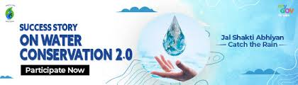

Water Resilience Success in Malihabad
Introduction
Malihabad, known worldwide for its delicious mangoes, has been facing serious challenges due to climate change, irregular rainfall, and depleting groundwater levels.
Farmers here depend heavily on water for irrigation, but in recent years, scarcity has affected both crop health and mango yield. To address this, innovative steps have
been taken to build water resilience in farming practices.
🌿 The Problem
Declining groundwater tables due to overuse of traditional irrigation.
Unpredictable monsoons and long dry spells.
High cost of water pumping with rising electricity and diesel prices.
Limited awareness about water-saving technologies among small farmers.
💧 The Solutions Implemented
Smart Irrigation Systems
Farmers adopted drip irrigation and automated sprinkler systems, reducing wastage and delivering water directly to plant roots.
Use of rain detection modules prevented unnecessary irrigation during rainfall.
Rainwater Harvesting Ponds
Community-level ponds and check dams were constructed to store rainwater.
Stored water is later used for irrigation in dry months.
Soil Moisture Sensors
Farmers now use smart sensors to monitor soil moisture in real-time.
This ensures watering only when required, saving up to 40% of water.
Awareness & Training
NGOs and government bodies organized workshops on sustainable water use.
Farmers learned how to combine traditional wisdom with modern technology.
🌟 The Success Story
Mango orchards that earlier suffered from water stress now show improved health.
Farmers report 20–30% increase in yield due to balanced irrigation.
Reduced water usage has lowered electricity bills and pumping costs.
Malihabad is becoming a model region for sustainable mango farming with water resilience at its core.
📌 Conclusion
The journey of Malihabad proves that with the right mix of technology, community effort, and awareness, farmers can fight against climate challenges. Building water
resilience is not just about saving water — it’s about securing the future of farming, protecting livelihoods, and ensuring that Malihabad’s mangoes continue to sweeten lives worldwide.